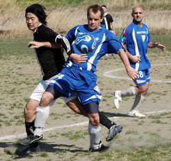
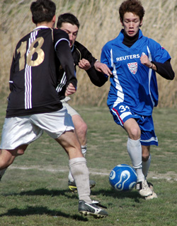
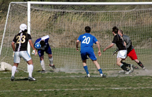

|
Misato, Sunday 18th March, Fair enough; rain and probably even snow is preferable to the squally wind and bright sun today. Visibility was poor – the howling wind and dust clouds that swirled about the pitch made you want to pack up and go picking peaches in California. Wyatt Earpe shot one of the Clantons under similar conditions. It was impossible to judge distances or flight of the ball with the sun beaming through the dust.

Moaning aside, a player to watch in the coming year is Paul Wadsworth – he gets more important in every game. Even on a day like this his play had the delicacy of truffles. Muzzy would have certainly scored a hatrick today if his left eye didn't become sightless and grotesque after a blast of dust. Still in his brief 10 minutes at the start he scored the key first goal, a short rebound, and showed a return to his electric momentum last seen in full in the BEFC game.
Graham, refreshed after his drinking holiday was back to his non-chalant self shuttling balls down the wing as he felt like. Bad conditions bring out the best in some players and right back Neil Mocham is one example. A sweet right foot was accompanied by some confident passing and dependable tackling - another good example is Chris Southam, who along with Neil and Graham gave the back line some offensive bite today, and was instrumental in Muzzy`s goal.

Simon, wasn't bad today and his juggernaut volley goal typical, but he seem to be saving a smidgen for later in the evening. Maz and Lindsey have an understanding – header, bounce, shot. Like a man who has tasted wine and is no longer satisfied with water, nothing short of a 25-yard volley or first-time strike would suffice for Hughes today. Latching on to lofted balls he came close to repeating the spectacular of last week against BFC, but it wasn`t to be.
The scoresheet from today won`t have Alex Saharas name on it but what a travesty. The 17-year old (is he still seventeen?) set up the second, was involved in the third and hit the inside post and crossbar and generally ran riot up front. But if he ran riot, Shosuke ran amok. Like a Manet painting, you only get the full effect of his work when you stand some distance back. Connected to the ball by an invisible piece of string, and spare nitrous oxide from his mazda coupe poured into the soles of his boots, the Amanis defenders could do little to avoid fouling him – buffeting him around like flotsam in a storm. His goal, Vags second, involved 3 or 4 beaten defenders and a shot from the narrowest of angles.
Playing into the wind we were 3-0 up at half time, suggesting that after we switched ends, more was to come. But the pernickety conditions denied us any wind advantage. For most of the first half Ged and Gary headed and hoofed balls away effectively. Second half however, Gary found himself caught in the path of a herd of wildebeest. He hit the deck to protect himself from a trampling, pretending to put a tackle in, but managed only to take down Ged, springing the Amanis striker who had a bit of work to do before finishing with a first goal, giving them a glimmer of hope.

In the second half we had a large number of decent shots, most of them taken with eyes shut against the blinding sun and dust. But worry over getting lost in the sandstorm and possibly dying of thirst and hunger at Misato, distracted us into lulls in from time to time. Amanis` imposing dead-ball specialist forced a good save from Taylor – a scoop over the crossbar - with a driven free kick, and then on the stroke of full time curled a corner past the Vags keeper affirming for the Amanis kicker his outstanding talent, but achieving little else. Full time and 3-2 will probably flatter Amanis on today`s performance, but Vags shouldn`t forget the many chances that, on another day – a snowy one perhaps – would have produced a record number of goals. Thanks to the replacement referee who stepped in at the last minute and did a decent job. Vagabonds have 1 game remaining this season, a win will give them a chance of promotion to the first division. Sparks are expected to fly. .
Report by Gary Quinn
|